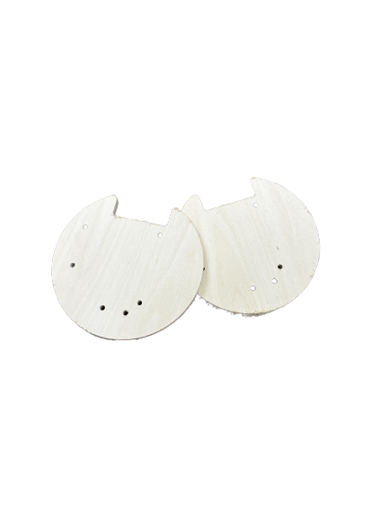
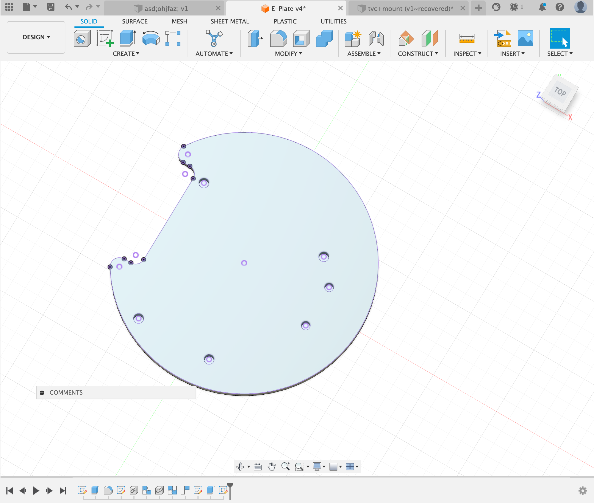

CNC Milling
For my CNC milling assignment, I made an electronics plate using wood. This e-plate is attached to the rocket and provides a sturdy platform for housing both the Arduino and the MPU6050. This was used in my final project to be able to house all of my electronics in a safter place rather than just hanging.
I started with a sketch with the plate and made it so it would press-fit in the outside modules. I also added a notch so the wires had a place to route when finally mounted.
Overview:
Design:
Next I added all of the components that needed to me mounted on to the plate and projected the holes onto the actual E-Plate
I wanted to use something thin but rigid at the same time so I settled on 6mm thick wood, I extruded the design 6mm.
The plan was to use standoffs while mounting all of the components so the components would stay safe and they would also me level. It was very important for some of the components to stay level as we were dealing with gyro readings.
This was my final design that I decided to cut, I gave a 0.2mm tolerance so that it would perfectly press fit into the rocket module that we had already designed.
Manufacturing:
I started by adding to wood to the CNC table, I used plastic nails so that if the head ran through the nails, the bit would not break.

Next I worked with the Aspire software to define my tool paths, for the holes I did a pocket tool path but for the outside shape I did a profile tool path so the piece would fit perfectly into the rocket module.
I made sure to run the pocket tool path before the profile tool path so that I would not need tabs while printing the peice.
I first did an air-cut so I could make sure that there was nothing wrong with the cut and it would fit where I placed it. This also told me that the toolpaths were ordered correctly.
Next I did the real cut and it cut perfectly. It did all of the tool-paths in two passes.

Above is the final cut that I ended up with and the actualy application of it in my project.